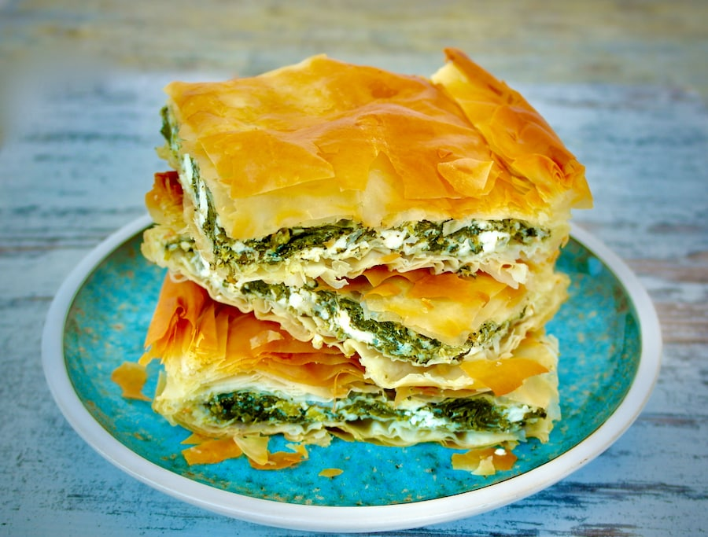
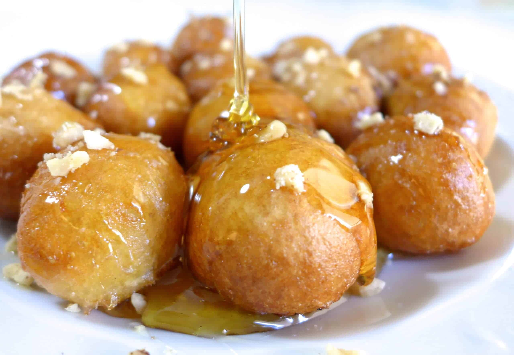

Chicken Souvlaki
Chicken souvlaki is a popular Greek dish made of marinated skewered chicken, often served with pita bread, vegetables and sauces like tzatziki.
Spanakopita
Spanakopita is a savory Greek pastry filled with spinach, feta cheese, onions and herbs, all wrapped in crispy phyllo dough.
Loukoumades
Loukoumades are sweet, deep-fried dough balls drizzled with honey and sprinkled with cinnamon, making for a perfect dessert or snack.